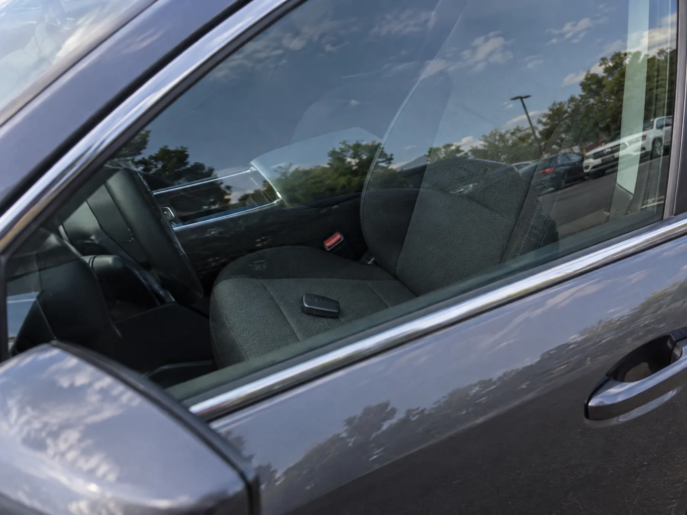
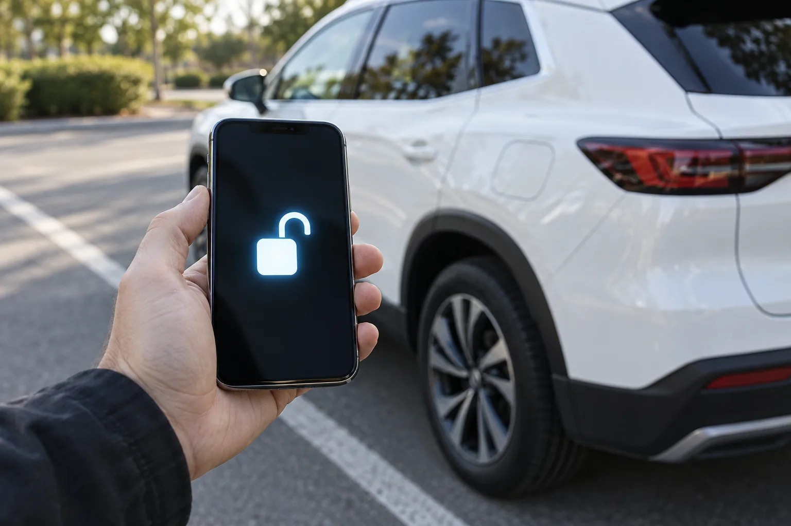
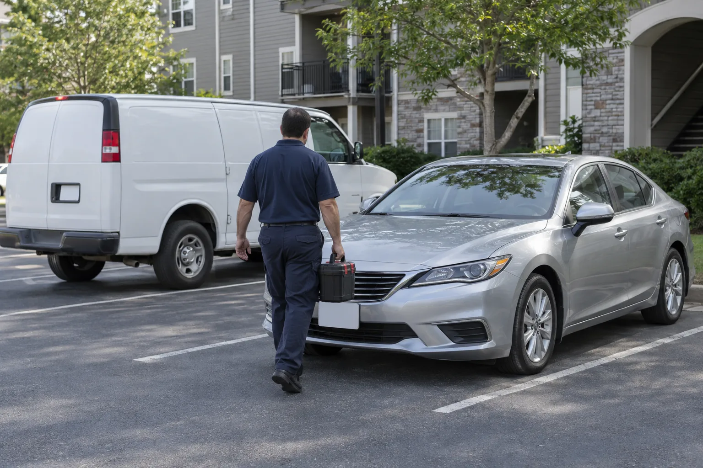
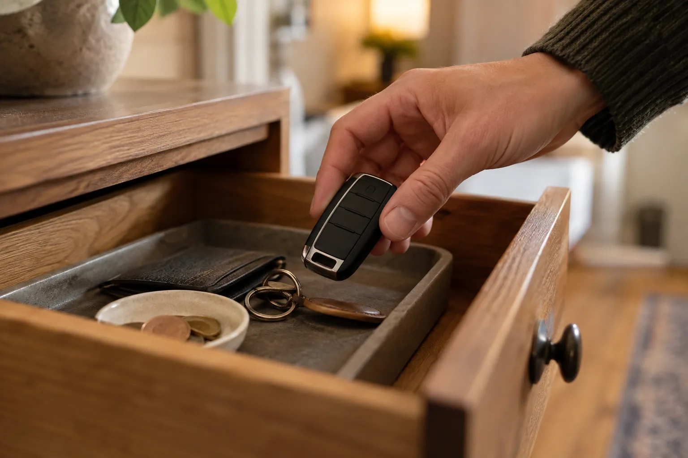
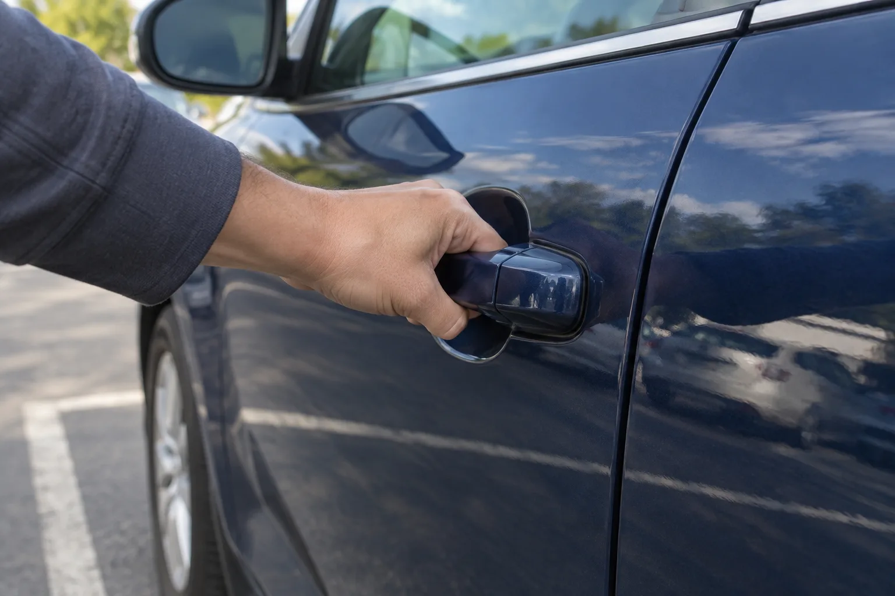

▲ 잠긴 차 창문 너머 운전석에 두고 내린 스마트키 이미지=AI 생성
🚨 차 안에 아이·노약자·반려동물이 있다면 — 기다리지 말고 바로 119
폭염이나 한파 속에 사람이 차 안에 갇혔다면 보험사나 열쇠 업체를 기다릴 상황이 아니다. 곧바로 119에 신고하자. 「119구조·구급에 관한 법률 시행령」 제20조는 구조대가 '단순 문 개방' 요청은 거절할 수 있다고 정하면서도, "다른 수단으로 조치하는 것이 불가능한 경우에는 그러하지 아니하다"는 단서를 달아 두었다. 소방청 역시 비긴급 출동 기준을 만들면서 "즉시 조치하지 않으면 인명피해 등이 발생할 수 있는 긴급" 상황에는 소방관서가 즉시 출동한다고 밝혔다. 신고할 때는 "차 안에 몇 살 아이가 있고, 에어컨·히터가 꺼진 상태"처럼 위험 상황을 구체적으로 말해야 한다. 반려동물은 같은 조항에서 '동물의 단순 구조'가 거절 대상으로 분류돼 있지만, 한여름 밀폐된 차처럼 생명이 위험하다면 상황을 설명하고 신고하자. 출동 여부는 119가 판단한다.
차 문을 닫고 돌아서는데, 운전석 위에 키가 보인다. 당황해서 창문 틈에 철사부터 밀어 넣기 전에 순서를 정하자. 요즘 차라면 대부분 휴대폰 앱으로 몇 분 안에 문을 열 수 있고, 앱이 안 되면 자동차보험 긴급출동, 그다음이 예비키와 열쇠 업체다.
1. 가장 빠른 방법 — 제조사 앱으로 원격 문 열기
커넥티드 서비스에 가입된 차라면 휴대폰으로 몇 번 누르는 것만으로 문 잠금이 풀린다. 이동통신망으로 차에 명령을 보내는 방식이라 차량 손상이 생기지 않는다. 제네시스는 공식 안내에서 이 기능을 "열쇠를 분실하거나 차 안에 두고 잠근 경우"에 쓰라고 명시하고 있다.

▲ 스마트폰 앱으로 차 문 잠금을 해제하는 장면 이미지=AI 생성
| 브랜드 | 앱·서비스 | 공식 안내 조건 |
|---|---|---|
| 현대 | 마이현대 앱(블루링크) | 해제 후 30초 안에 문을 열지 않으면 자동 재잠금. 시동을 끈 뒤 블루링크 2.0·3.0은 96시간, 10.25인치 이상 내비 장착 차는 168시간, ccNC 장착 차는 336시간까지 이용 가능 |
| 기아 | Kia Connect 앱 | 해제 후 30초 안에 문을 열지 않으면 자동 재잠금. 마지막 시동 종료 후 차종에 따라 48~336시간까지 작동, 통신 음영 지역은 제한 |
| 제네시스 | MY GENESIS 앱(제네시스 커넥티드 서비스) | 해제 후 30초 안에 문을 열지 않으면 자동 재잠금. 시동 종료 후 96~336시간(내비 사양별), 보안 비밀번호 필요 |
| BMW | My BMW 앱(Remote Services) | 원격 잠금·해제 지원. 차량의 커넥티드 드라이브 옵션·사양에 따라 기능이 다름 |
| 메르세데스-벤츠 | Mercedes-Benz 앱(Mercedes me) | 도어 원격 잠금·해제 지원. 차량 등록증·신분증을 지참하고 파트너사를 방문해 차량 연동을 먼저 해야 함 |
📍 앱 원격 해제가 안 되는 흔한 이유
① 가입·로그인이 안 돼 있다. 서비스 가입과 차량 연동은 현장에서 바로 끝나지 않는 경우가 많다. 벤츠처럼 대리점(파트너사) 방문이 필요한 브랜드도 있다. ② 시동을 끈 지 오래됐다. 배터리 보호를 위해 시동 종료 후 일정 시간(현대 기준 96~336시간)이 지나면 원격 제어가 멈춘다. 장기 주차 뒤라면 앱이 안 될 수 있다. ③ 지하 주차장 등 통신 음영 지역이면 명령이 차에 닿지 않을 수 있다. ④ 보안 비밀번호를 잊었다. 제네시스는 비밀번호를 잊은 경우 고객센터(080-700-6000)로 문의하라고 안내한다.
앱이 없거나 가입이 안 된 상태에서 콜센터 상담원에게 전화로 원격 해제를 요청할 수 있는지는 현대·기아·제네시스 공식 안내 페이지에서 확인되지 않았다. 커넥티드 서비스 가입 차량이라면 해당 브랜드 고객센터에 먼저 문의해 볼 수는 있지만, 확실한 방법으로 기대하기는 어렵다. 결국 이 방법은 평소에 앱을 설치하고 로그인해 둔 사람만 쓸 수 있다.
현대차 원격 문 열기의 세부 조건은 공식 페이지에서 확인할 수 있다. 블루링크 원격 문 열기 안내 바로가기
2. 자동차보험 긴급출동 '잠금장치 해제'
앱이 안 된다면 가입한 자동차보험의 긴급출동 서비스를 부르자. 대부분 긴급출동 특약에 '잠금장치 해제'가 들어 있고, 연간 이용 횟수 안에서 무료다. 다만 모든 차의 문을 열어주는 것은 아니다. 보험사 공식 안내에서 확인한 조건은 아래와 같다.
| 보험사 | 연간 이용 횟수 | 잠금장치 해제 제한 |
|---|---|---|
| 삼성화재(애니카서비스) | 기본 연 6회(단기 3회), 고급형·프리미엄 연 10회 | 운전석 문만, 트렁크 제외. 스마트키·이모빌라이저 등 특수잠금장치나 사이드 에어백이 달려 일반적인 방법으로 열 수 없는 차는 서비스 불가. 해제 과정의 불가피한 파손은 보상하지 않음 |
| 현대해상(하이카서비스) | 1년 계약 6회(전체 출동 서비스 합산) | 트렁크 제외, 외제차는 서비스 제공하지 않음 |
| KB손해보험 | 특약별 상이 | 승용차만 가능. 스마트키·외제차·이륜차 등은 출동이 불가능한 경우가 있음 |
| DB손해보험 | SOS 긴급출동 보험기간 중 6회 | 차종별 세부 조건은 콜센터 확인 필요 |

▲ 긴급출동 기사가 잠긴 차량으로 향하는 장면 이미지=AI 생성
가장 걸리는 부분은 스마트키 차량 제외 조항이다. 2021년 아시아타임즈 보도에 따르면 보험업계는 "스마트키 방식은 기존 도구로 문을 해제할 수 없어 유리를 파손하는 등의 방식을 쓰는데, 그러면 분쟁이 생길 우려가 크다"고 설명했다. 요즘 신차 대부분이 스마트키라는 점을 생각하면, 전화로 접수할 때 차종·연식·키 종류를 정확히 말하고 출동 가능 여부부터 확인하는 게 시간을 아끼는 길이다. 도착 시간은 보험사가 공식 기준을 공개하지 않아 지역·시간대에 따라 다르다.
📍 긴급출동 부를 때 준비할 것
보험사 앱이나 대표번호로 접수하면서 차량번호, 현재 위치(주차장 층·구역), 차종과 키 종류를 알려주자. 삼성화재는 해제 과정에서 불가피하게 생긴 파손을 보상하지 않는다고 명시하고 있으니, 작업 전에 어떤 방식으로 여는지 기사에게 물어보는 것도 방법이다.
3. 예비키 — 느려도 가장 확실하다
집이 가깝거나 가족이 예비키를 가져다줄 수 있다면, 차에 아무 손상 없이 끝나는 가장 확실한 방법이다. 보험 긴급출동이 스마트키 차량이라는 이유로 거절됐거나, 수입차라 출동 대상이 아닐 때 특히 현실적인 선택지다. 가족에게 부탁할 때는 스마트키 안에 든 비상용 기계식 키도 함께 있는지 확인해 달라고 하자.

▲ 집에 보관해 둔 예비 스마트키를 꺼내는 장면 이미지=AI 생성
4. 열쇠 전문 업체 — 총액부터 확인
앞의 방법이 모두 막혔다면 자동차 문 개방을 전문으로 하는 열쇠 업체를 부른다. 비용은 업체·지역·시간대(심야·휴일 할증)·차종에 따라 편차가 커서 공신력 있는 기준 가격이 없다. 전화할 때 차종·연식·키 종류를 말하고 출장비를 포함한 총액을 먼저 확인하자. 작업 전 신분증과 자동차등록증 등으로 차량 소유를 확인하는 업체를 고르는 편이 안전하다. 확인 절차 없이 아무 차나 열어주는 곳이라면 내 차도 똑같이 열릴 수 있다는 뜻이다.
| 방법 | 소요 시간 | 비용 | 조건 |
|---|---|---|---|
| 제조사 앱 원격 해제 | 즉시(수십 초~수 분) | 커넥티드 서비스 이용 범위 내 | 사전 가입·로그인·차량 연동, 시동 종료 후 제한 시간 이내, 통신 가능 지역 |
| 보험 긴급출동 | 출동 기사 도착까지(지역·시간대별 상이) | 연간 한도(보통 6회) 내 무료 | 긴급출동 특약 가입, 트렁크 제외, 스마트키·외제차는 거절될 수 있음 |
| 예비키 | 키 보관 장소까지 거리에 따라 | 교통비 정도 | 예비키 보유, 가져다줄 사람 또는 이동 수단 |
| 열쇠 전문 업체 | 업체 도착까지 | 업체·시간대별 편차 큼(사전 총액 확인) | 소유 확인 서류, 차종별 작업 가능 여부 |
| 119 | 긴급 신고 즉시 | 무료 | 사람이 갇혀 생명·신체 위험이 있을 때. 단순 문 개방은 거절 가능 |
5. 스마트키는 안에 두면 안 잠긴다던데, 왜 잠겼을까
스마트키 차량 상당수는 키가 실내에 있으면 자동 잠금이 작동하지 않도록 설계돼 있다. 현대 그랜저(GN7) 사용설명서도 스마트 키가 차 내부에 있을 때는 자동 잠금이 작동하지 않는다고 안내한다. 그런데도 잠기는 경우가 있다.

▲ 잠긴 차 문 손잡이를 당겨보는 장면 이미지=AI 생성
| 상황 | 설명 |
|---|---|
| 트렁크 안에 두고 닫음 | 현대 사용설명서는 스마트 키를 골프백·금속 케이스 등 금속 물체 가까이 두고 트렁크를 닫으면 트렁크가 잠길 수 있다고 경고한다. 보험 긴급출동도 트렁크 잠금장치는 해제 대상에서 뺀다 |
| 금속·전자기기 간섭 | 같은 설명서는 스마트 키가 금속 물체 근처에 있으면 잠금·해제와 시동에 문제가 생길 수 있다고 안내한다. 차가 키를 실내에서 감지하지 못하면 잠김 방지도 작동하지 않는다 |
| 기계식 키·폴딩키 차량 | 키 위치를 감지하는 기능이 없는 차는 실내 잠금 버튼을 누르고 문을 닫는 식으로 잠그면 키가 안에 있어도 그대로 잠긴다 |
6. 급해도 하면 안 되는 것
⛔ 이것만은 피하자
· 옷걸이·철사로 창문 틈 공략: 창문 고무 몰딩과 도어 내부 배선을 망가뜨리기 쉽다. 삼성화재가 사이드 에어백 장착 차를 '일반적인 방법으로 열 수 없는 차'로 분류해 잠금장치 해제에서 제외하는 것도 도어 안쪽에 부품이 촘촘해졌기 때문이다
· 스스로 유리 깨기: 사람이 갇힌 긴급 상황이라면 직접 유리를 깨기보다 119에 신고하고 지시를 따르자. 이 기사에서는 어느 창문을 깨야 하는지 안내하지 않는다. 공식 안전 지침으로 확인된 내용이 없기 때문이다. 실제 구조 현장에서는 구조대원이 상황을 보고 판단한다
· 소유 확인도 없이 문을 열어주는 업체: 총액을 알려주지 않거나 신분·소유 확인을 생략하는 곳은 피하자
· 앱 원격 해제 후 머뭇거리기: 30초 안에 문을 열지 않으면 다시 잠긴다. 차 옆에 서서 누르자
7. 다음엔 안 겪으려면 — 예방법
✅ 지금 해두면 좋은 것
· 제조사 앱을 지금 설치하고 로그인해 두자. 원격 문 열기는 미리 가입·연동한 사람만 쓸 수 있다. 보안 비밀번호도 기억해 두자
· 예비키는 가족이 알 수 있는 곳에 보관하자. 차 안이나 차 주변에 숨겨 두는 것은 도난 위험이 있다
· 디지털 키를 지원하는 차라면 스마트폰을 키로 등록해 두자. 현대차 디지털 키 2, BMW 디지털 키 등은 휴대폰으로 문을 여닫을 수 있다
· 스마트워치: 메르세데스-벤츠 앱은 애플워치에서 바로 도어 잠금·해제를 지원한다
· 보험 증권에서 긴급출동 특약과 잠금장치 해제 제외 조건(스마트키·외제차 등)을 미리 확인해 두자
8. 정리 — 순서만 기억하면 된다
차 안에 사람이나 반려동물이 있고 날씨가 위험하면 무조건 119가 먼저다. 그렇지 않다면 ① 제조사 앱 원격 문 열기 → ② 보험 긴급출동 잠금장치 해제 → ③ 예비키 → ④ 열쇠 전문 업체 순서로 시도하자.
앱은 가장 빠르지만 미리 가입·연동해야 하고, 해제 후 30초 안에 문을 열어야 한다. 보험 긴급출동은 연 6회 안팎 무료지만 스마트키·외제차·트렁크는 거절될 수 있으니 접수할 때 차종부터 확인하자. 철사나 옷걸이로 여는 방법은 수리비만 늘린다.